순위를 매긴 기준
발표자는 자기와 주변 사람이 실제로 돈을 번 경우만 모아도 열 개가 넘었다고 해요. 그중에는 직접 해 보고 돈까지 받아 본 방법이 많아요. 글 자동화, 전자책·강의 판매, 프로그램 개발 외주가 그래요. 그래서 이 순위는 인터넷에서 주워 온 부업 목록이 아니라 경험에서 나온 줄 세우기예요.
슬라이드는 순위를 가르는 질문을 둘로 나눠 보여 줘요. 위 흰 칸의 "AI니까 될 것 같다"에는 X, 아래 검은 칸의 "실제로 돈을 내는 사람이 있는가?"에는 체크가 붙어 있어요.
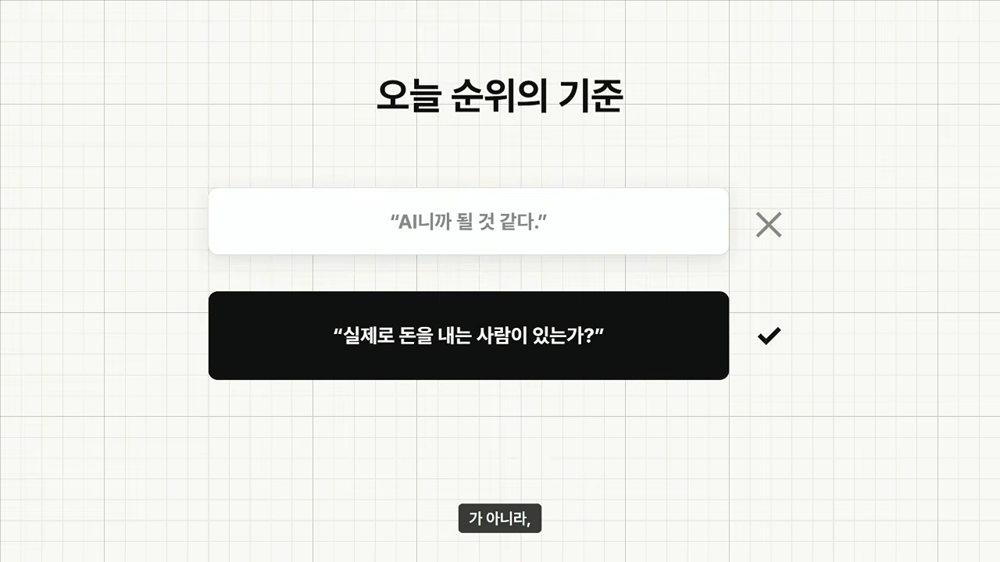
클로드 코드는 직원 한 명
처음 시작한다면 무엇부터 배울까요? 발표자는 클로드 코드부터 제대로 써 보겠다고 해요. 바이브 코딩을 모른다면 코딩 언어를 하나씩 외우기보다, 원하는 결과물을 AI에게 설명하고 직접 만들어 보는 데서 시작하라는 거예요.
많은 사람이 클로드 코드를 개발자 전용 도구로 오해한다고 해요. 슬라이드에는 '클로드 신입'이라는 사원증 옆에 "사업을 같이 운영하는 직원 한 명을 컴퓨터 안에 넣어두는 것"이라고 적혀 있어요. 홈페이지나 프로그램을 만들고, 글쓰기를 자동화하고, 자료 정리나 반복 업무를 줄이는 데 쓸 수 있어요.
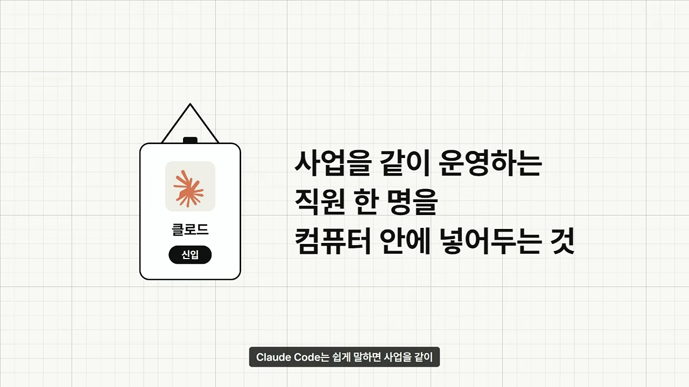
네 가지 기준
등급은 네 가지 질문으로 매겨요. 아래 슬라이드의 네 줄이 그 질문이에요. 마지막 두 줄이 이 영상 특유의 기준이에요. 나중에는 하루 30분만 들여도 되는지, 그리고 월 50만 원이 현실적인지를 봐요.
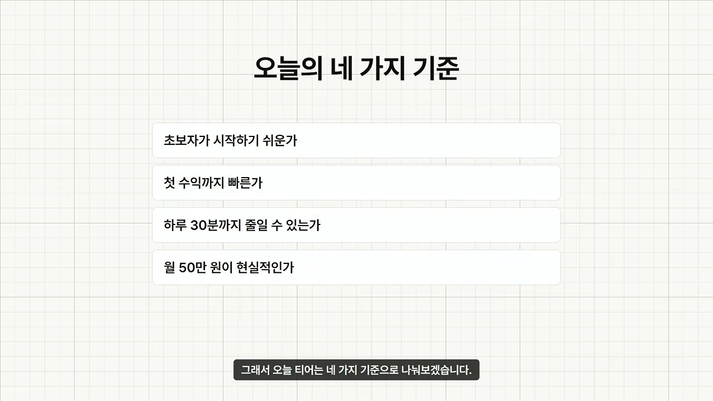
영상이 끝날 무렵 완성되는 순위표를 먼저 이름으로 옮겨 보면 아래와 같아요. 화면의 표는 아이콘만 있어서, 각 칸에 영상에서 부른 이름을 적었어요.
F급·D급: 누구나 찍어 낼 수 있는 것
F급: AI 쇼츠 완전 자동화
요즘 흔히 보이는 방식이에요. 슬라이드의 다섯 칸처럼 주제 찾기, 대본, AI 음성, AI 영상을 모두 AI에게 맡기고, 마지막 검은 칸처럼 하루 20개씩 자동으로 올려요. "영상 하나만 터지면 자는 동안에도 돈이 들어온다"는 말이 따라붙곤 해요.
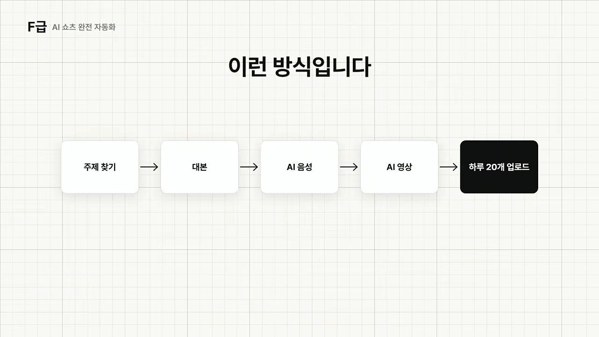
가장 큰 문제는 누구나 만들 수 있다는 점이에요. 클로드에게 역사 이야기 대본 100개를 달라고 하면 금방 나와요. 내가 10분에 만든다는 건 세상 누구나 10분에 똑같이 만든다는 뜻이에요.
"그래도 조회수만 나오면 돈 버는 거 아닌가요?"라는 반론에는 돈을 벌 수도 있다고 인정해요. 다만 이 영상의 기준, 즉 하루 30분으로 월 50만 원을 꾸준히 내는지로 보면 이야기가 달라져요. 아래 슬라이드의 세 줄이 그 이유예요.
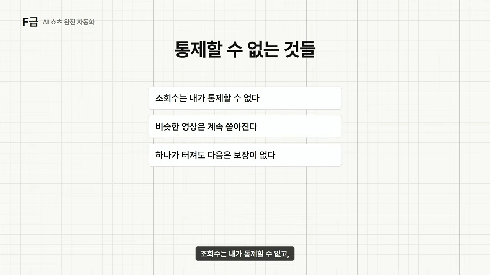
그렇다고 쇼츠를 하지 말라는 건 아니에요. 쇼츠를 유입 수단으로 쓰는 건 좋다고 해요. 슬라이드처럼 쇼츠가 내 상품, 내 롱폼, 내 서비스로 사람을 보내는 입구가 되는 거예요.
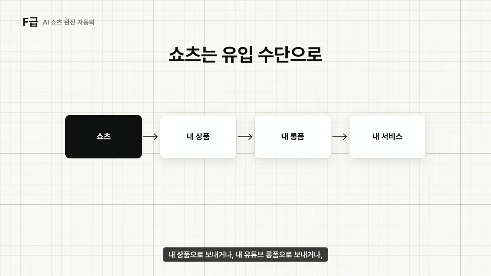
발표자는 F급 이야기를 이렇게 정리해요. AI를 쓰는 게 문제가 아니에요. AI 덕분에 누구나 대량 생산할 수 있게 된 것을 경쟁력으로 착각하는 게 문제예요.
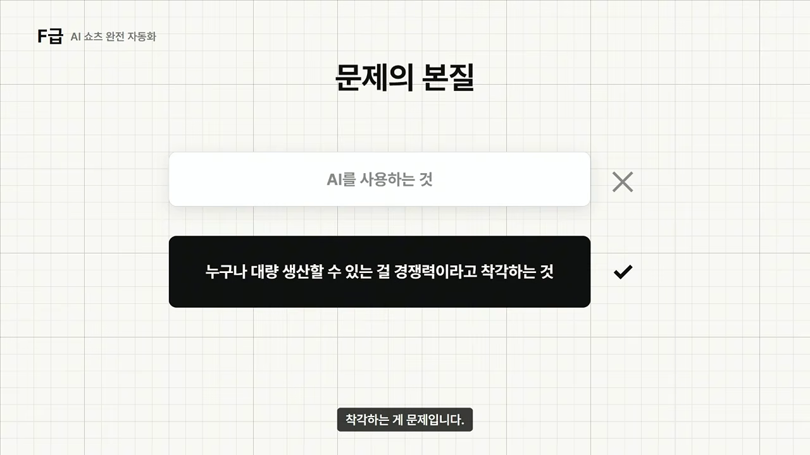
D급: AI 디지털 파일 판매
플래너, 체크리스트, 워크시트, 캔바 템플릿, 노션 템플릿, 포스터 같은 파일을 AI로 빠르게 만들어 파는 방식이에요. 슬라이드 아래쪽에는 판매처로 Etsy와 국내 마켓이 적혀 있어요. 장점은 분명해요. 재고도 배송도 없고, 한 번 만든 파일을 여러 번 팔 수 있어요.
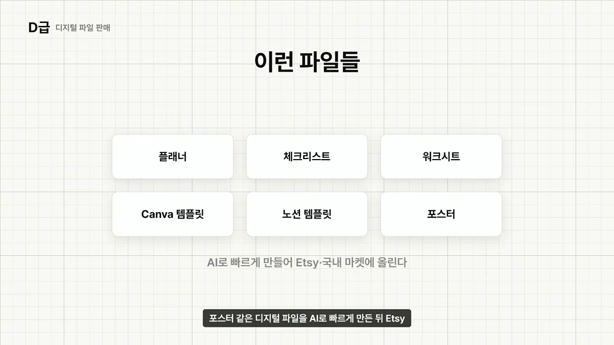
그런데 왜 D급일까요? 만드는 게 너무 쉬워졌기 때문이에요. 마진이 거의 100%라서 잘하는 사람은 분명 돈을 벌어요. 그래서 F급보다는 위예요. 하지만 "직장인을 위한 주간 생산성 플래너 만들어 줘"라고 하면 누구나 비슷한 결과물을 얻어요.
그래서 무엇을 만드느냐보다 누구에게 파느냐가 중요해요. 그림 속 인물이 노트북 화면 가득한 템플릿을 보며 머리를 긁는 장면이 그 고민이에요. 발표자는 "예쁜 다이어리" 대신 "ADHD 직장인을 위한 하루 15분 업무 정리 플래너"처럼 고객을 좁히라고 해요. 영어 템플릿도 "토익 700점 직장인을 위한 30일 단어 복습 템플릿"처럼 구체적인 문제가 들어가야 팔릴 이유가 생겨요.
흔한 실수도 짚어요. AI로 파일 100개를 만들어 전부 올리면 하나는 팔릴 것 같거든요. 하지만 안 팔리는 상품 100개를 빨리 만드는 건 사업이 아니에요. 실제로 돈을 내는 상품 하나를 찾는 게 훨씬 중요해요.
C급: PPT·제안서 제작
PPT(PowerPoint)와 제안서 만들기는 D급보다 현실적이라 C급이에요. 슬라이드의 네 칸처럼 회사, 강사·컨설턴트, 학원, 병원이 계속 자료를 만들어요. 이미 돈을 내는 고객이 많다는 뜻이에요.
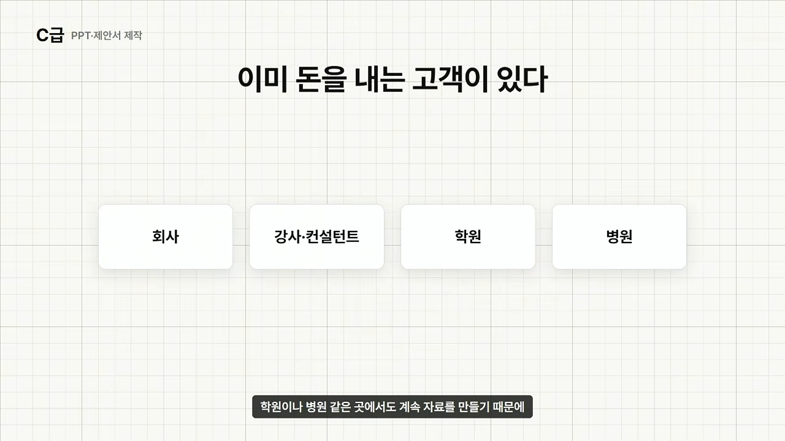
바로 만들지 말고 스토리라인부터
고객이 50페이지 보고서를 주며 "발표자료 20장으로 만들어 주세요"라고 했다고 해 볼게요. 예전에는 끝까지 읽고, 핵심을 뽑고, 순서를 짜고, 슬라이드로 옮겨야 했어요. 클로드 코드를 쓰면 먼저 자료를 분석시켜요. 화면의 입력창에는 이렇게 적혀 있어요.
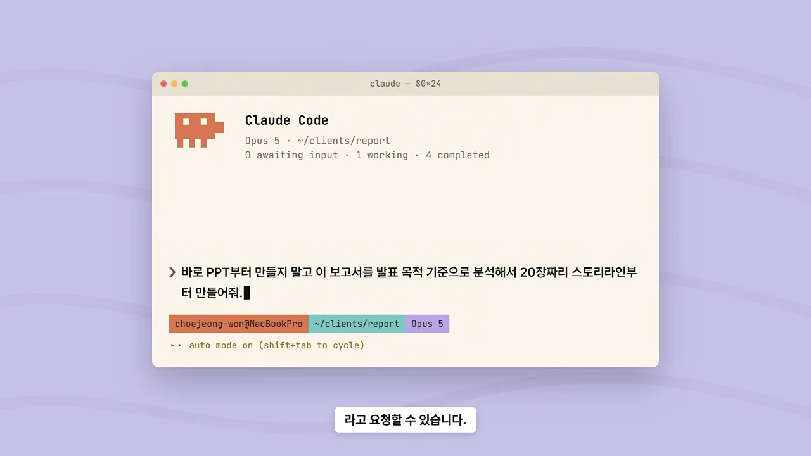
슬라이드마다 무엇을 먼저 정리시키는지도 보여 줘요. 제목, 핵심 메시지, 필요한 자료, 추천 시각자료 네 가지예요. 이걸 먼저 받아 두면 작업 시간이 상당히 줄어요.
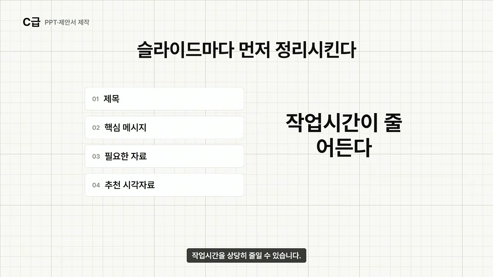
왜 C급일까요: 수정 지옥
"수정도 AI한테 시키면 되지 않나요?" 일부는 그래요. 그런데 진짜 문제는 AI가 아니라 사람에게서 터져요. 슬라이드에 적힌 고객의 말 네 줄이 그 장면이에요.
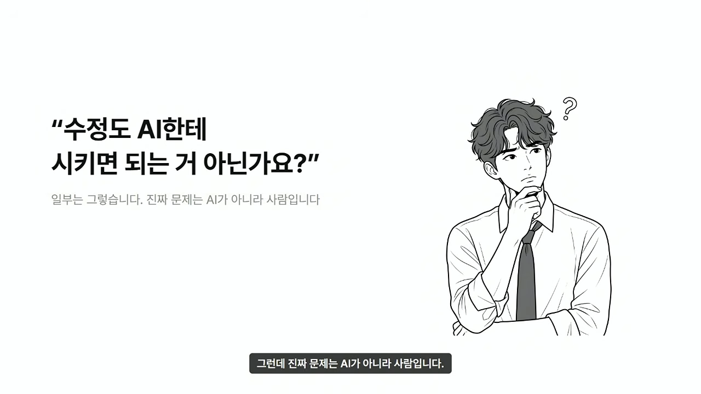
그래서 이 일을 한다면 파는 문장부터 바꾸라고 해요. "PPT 만들어 드립니다"가 아니라 "원고만 주시면 발표 구조 설계부터 최종 자료까지 만들어 드립니다"처럼 결과로 팔아요. 수정 횟수도 처음부터 분명히 정하는 게 좋아요.
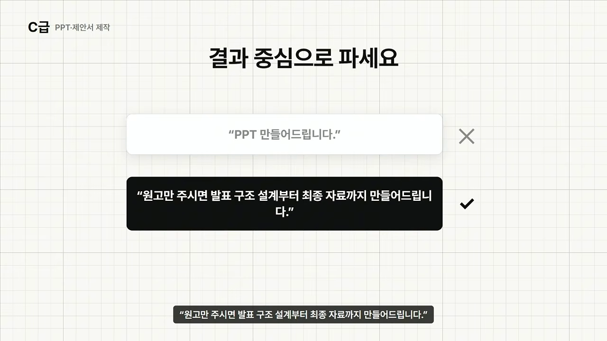
C급 끝에는 네 가지 기준 카드가 처음으로 표시와 함께 나와요. 초보자가 시작하기 쉬운가와 첫 수익까지 빠른가에는 체크, 하루 30분까지 줄일 수 있는가에는 X가 붙어요. 월 50만 원 줄에는 아무 표시가 없어요.
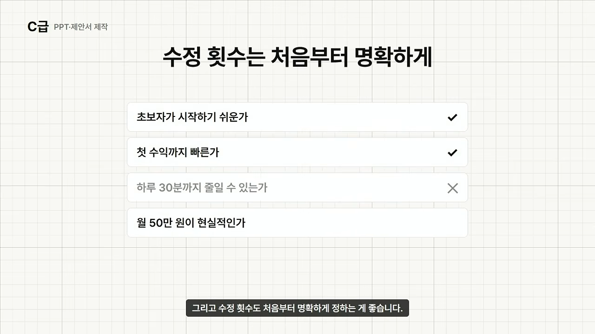
B급: 전자책·강의, 블로그 자동화, 홈페이지
B급에는 세 가지가 들어가요. 그중 둘은 발표자가 직접 해서 돈을 벌어 본 방식이에요. 셋 다 돈이 되는 건 확인했지만, 첫 수익이 늦거나 반복 매출이 약하다는 약점이 하나씩 있어요.
AI 전자책과 강의
"클로드한테 전자책 한 권 써 줘"라고 해서 나온 걸 PDF(Portable Document Format)로 파는 거라면 발표자도 권하지 않아요. AI에게 지식을 만들어 달라는 게 아니라, 내가 직접 겪은 지식을 AI로 상품화하는 거예요. 슬라이드에 기록해 둘 재료 네 가지가 나와요.
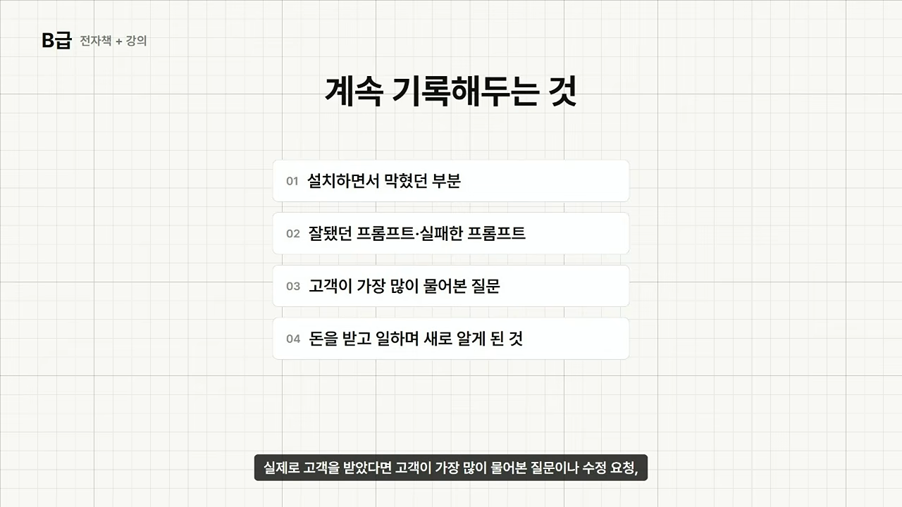
예를 들어 클로드 코드로 홈페이지를 여러 번 만들었다면 이 기록이 쌓여 있을 거예요. 나중에 클로드에게 지난 한 달 기록을 전부 읽고, 초보자가 결과물 하나를 만드는 순서대로 목차를 짜 달라고 해요. 이미 해 본 일이 그대로 전자책의 재료가 돼요.
그런데 왜 A급이 아닐까요? 팔 사람이 먼저 있어야 하거든요. 아래 슬라이드처럼 많은 사람이 순서를 거꾸로 해요. 전자책 100페이지를 쓰고, 강의를 20시간 찍은 뒤에야 "이거 어디에서 팔지?"를 고민해요.
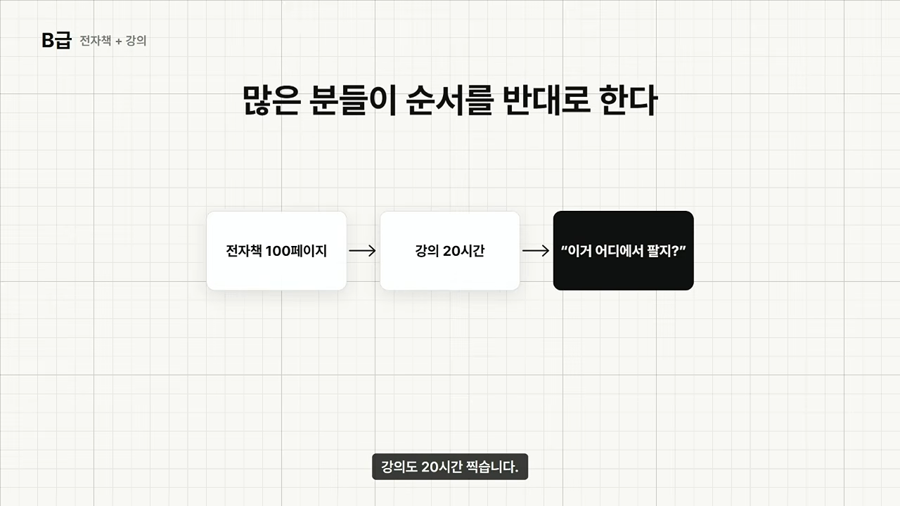
발표자라면 반대로 해요. 먼저 콘텐츠를 만들고, 사람들이 반복해서 묻는 질문을 확인하고, 그 문제를 직접 겪어 본 다음 상품으로 만들어요. 그러면 계단처럼 자연스럽게 이어진다고 해요.
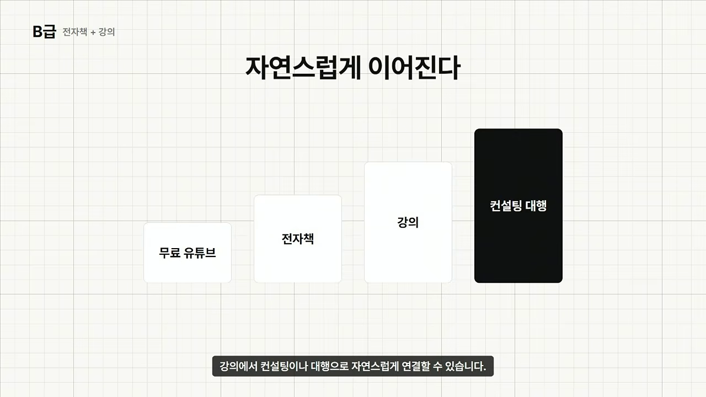
블로그 글 자동화
이것도 발표자가 직접 자동화해서 수익을 낸 방식이에요. 슬라이드 제목은 '블로그 자동화'이고, 말로는 네이버 홈판에 올릴 글을 쓰는 자동화라고 설명해요. "AI가 쓴 글을 올려서 진짜 돈이 돼요?"라는 의심에 대한 답은 아래 슬라이드와 같아요.
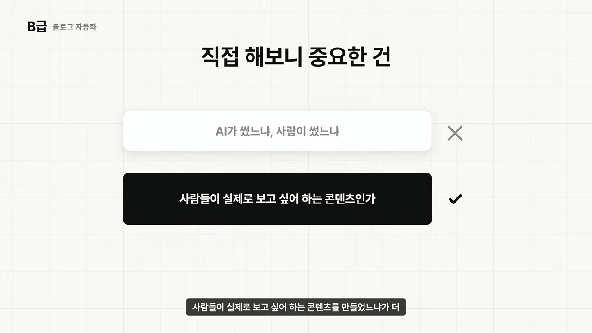
아무 키워드나 잡아 글 100개를 뽑아 전부 올리는 건 자동화가 아니라 쓰레기 대량 생산에 가깝다고 해요. 발표자가 말하는 자동화는 다섯 단계예요. 주제와 자료를 모으고, 기존 글과 겹치는지 확인하고, 사람들이 궁금해할 내용을 정리하고, 구조와 초안을 잡고, 마지막에 사람이 직접 확인해요. 이 중 반복되는 부분만 AI가 맡아요.
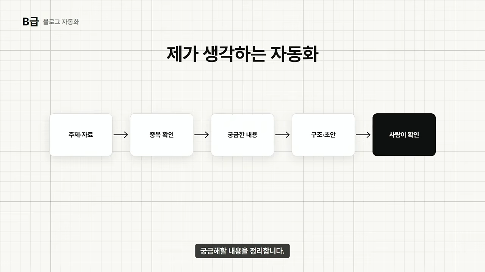
클로드 코드 프로젝트 안에는 기존 글, 키워드, 조회수가 잘 나온 글, 제목, 카테고리, 자료 출처, 내가 선호하는 글 구조를 계속 쌓아 둘 수 있어요. 그러면 "기존 글과 겹치지 않는 주제를 찾아 줘" 같은 지시를 이어 갈 수 있어요. 화면의 입력창은 그중 하나예요.
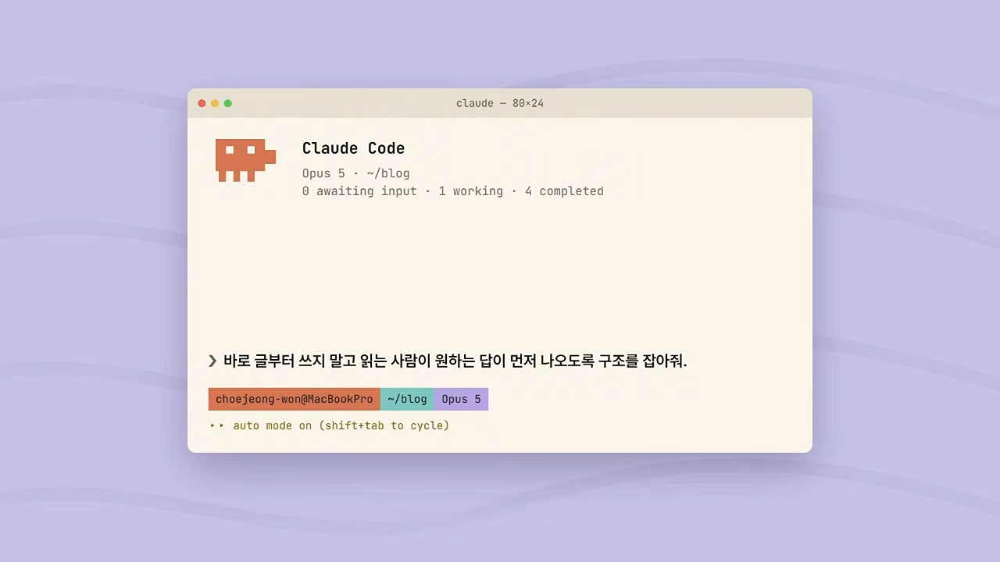
B급인 이유는 외주처럼 "이거 만들어 드릴 테니 30만 원 주세요"라며 바로 돈을 받는 구조가 아니라서예요. 글을 썼다고 바로 노출되지 않고, 모든 글이 홈판에 뜨지도 않고, 모든 방문자가 애드포스트 수익으로 이어지지도 않아요. 첫 수익까지 걸리는 시간과 플랫폼 의존성이 약점이에요.
홈페이지 제작
예전에는 HTML(HyperText Markup Language), CSS(Cascading Style Sheets), 자바스크립트와 디자인까지 직접 공부해야 했어요. 슬라이드는 그 줄에 X를 치고, 아래 검은 칸에 클로드 코드 덕분에 진입장벽이 훨씬 낮아졌다고 적어요.
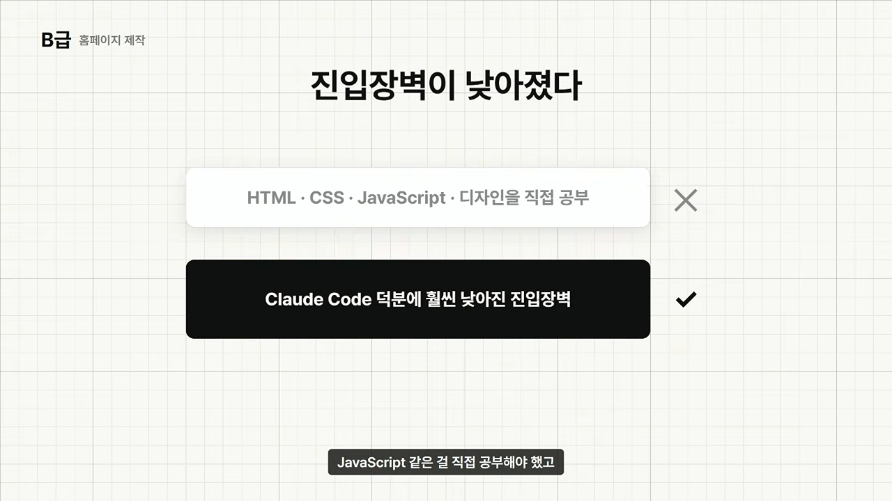
처음이라면 고객부터 찾지 말고 미용실, 필라테스, 세무사 같은 업종 하나를 골라 가상 포트폴리오부터 만들어 보래요. 이때도 "미용실 홈페이지 만들어 줘"가 아니라 상황을 구체적으로 주고, 코딩 전에 동선부터 설계하게 해요.
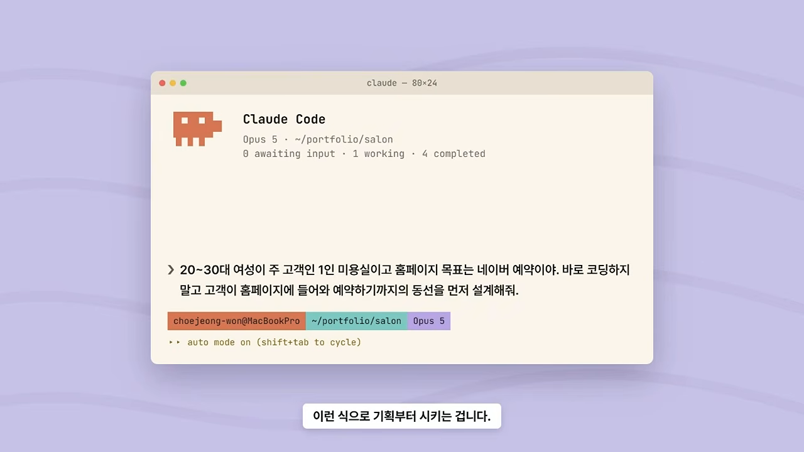
그다음 실제로 만들고 예약 버튼, 가격표, 모바일 화면을 계속 고치며 완성도를 높여요. 포트폴리오가 몇 개 생기면 20만 원이든 30만 원이든 실제 고객에게 받아 봐요. 첫 목표는 내가 AI로 만든 결과물에 누군가 돈을 내게 만드는 거예요. 다만 홈페이지는 한 번 만들면 끝나는 경우가 많아 반복 매출이 약해요. 첫 매출 경험에는 좋지만 그래서 B급이에요.
A급: 랜딩페이지, 프로그램 외주, SNS 운영대행
A급부터는 고객에게 직접 돈을 받는 일이 중심이에요. 세 가지 모두 월 50만 원에 손이 닿지만, 각자 짊어지는 부담이 있어요.
랜딩페이지 제작
홈페이지와 비슷해 보여도 목적이 달라요. 슬라이드의 두 칸이 그 차이예요. 왼쪽 흰 칸의 홈페이지는 사업을 소개하고, 오른쪽 검은 칸의 랜딩페이지는 상품을 판매해요. 온라인 강의, 전자책, 컨설팅, 학원 모집, 병원 이벤트처럼 상품 하나를 팔려고 만드는 페이지예요.
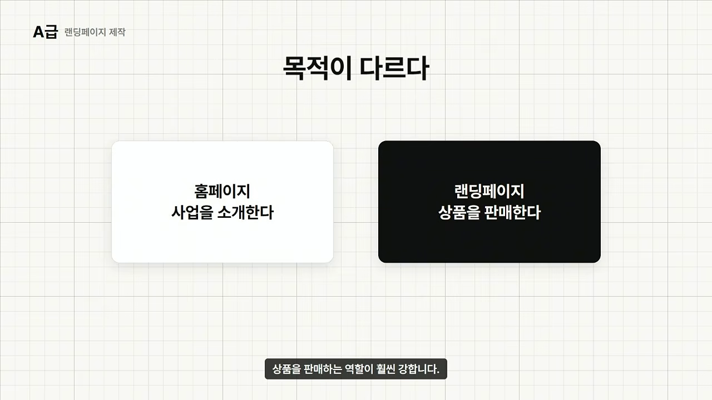
그래서 "웹페이지 예쁘게 만들어 드립니다"라고 팔면 단가가 잘 오르지 않아요. 판매 구조부터 카피라이팅, 디자인, 페이지 제작까지 묶어서 팔아야 가격을 높게 받을 수 있어요.
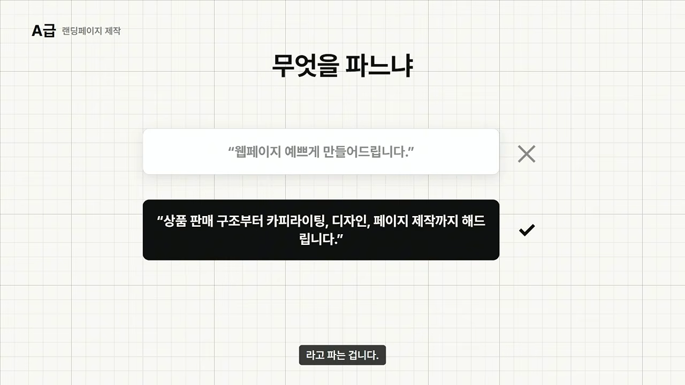
고객의 상품을 먼저 분석해 누가 살지, 왜 사야 하는지 정리해요. 그다음 슬라이드의 여섯 칸처럼 한 흐름으로 설계해요. 문제 제기, 공감, 해결책, 상품 소개, 후기·가격, 마지막 검은 칸의 FAQ(Frequently Asked Questions)·구매 순서예요.
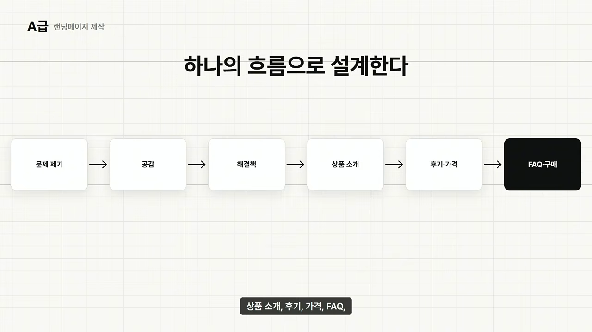
이렇게 하면 페이지를 만드는 사람이 아니라 고객의 상품이 더 잘 팔리도록 판매 구조를 만드는 사람이 돼요. 그림에서 두 사람이 태블릿 속 페이지를 함께 들여다보는 장면이 그 역할이에요. 한 달에 25만 원짜리 두 건이면 월 50만 원이라 A급이에요.
AI 프로그램 개발 외주
이것도 발표자가 직접 해서 돈을 받아 본 방식이에요. "코딩도 못 하는 사람이 남의 프로그램을 만들어 준다고요?"라는 질문에 가능하다고 답해요. 다만 클로드 코드만 있으면 개발 지식이 전혀 없어도 된다는 뜻은 절대 아니라고 덧붙여요.
처음부터 거대한 앱을 만들 필요는 없어요. 쇼핑몰 사장님이 매일 30분씩 주문 데이터를 엑셀로 정리한다고 해 볼게요. 필요 없는 열을 지우고, 상품별로 나누고, 매출을 계산해 보고서로 만드는 일이에요.
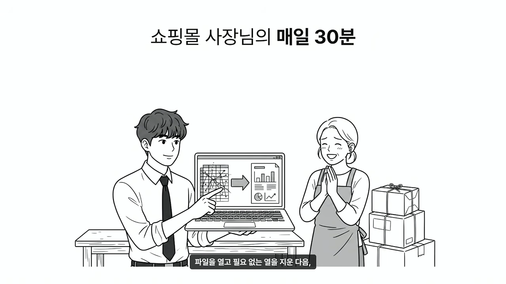
이 일을 엑셀 파일 하나만 넣으면 끝나는 작은 프로그램으로 바꿔 줘요. 슬라이드의 네 칸이 그 흐름이에요.
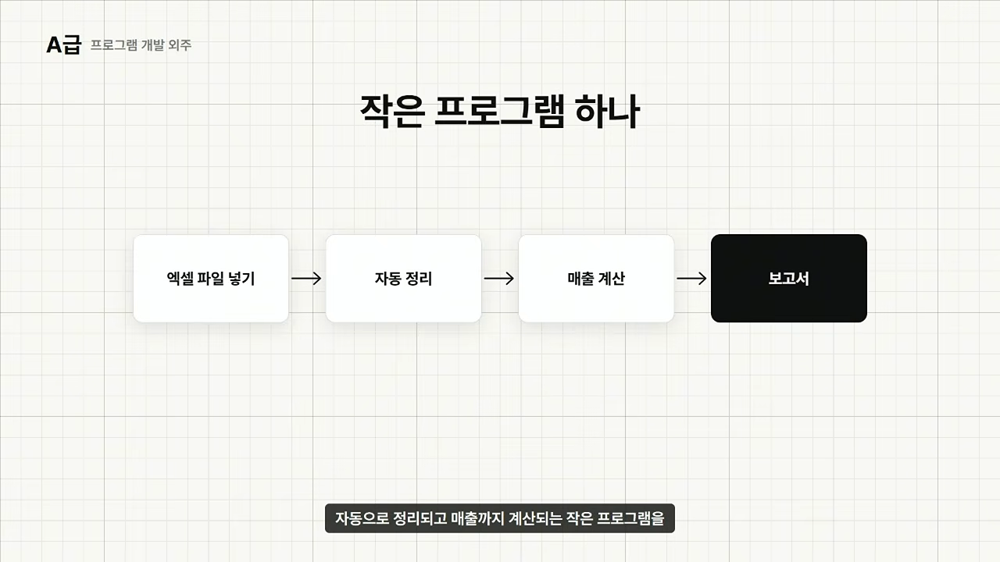
사업 현장에는 이런 작지만 반복되는 불편이 많다고 해요. 슬라이드는 예시 세 가지를 보여 줘요. 학원의 성적표 PDF, 회사의 견적서 자동 생성, 부동산의 매물 소개 자료예요.
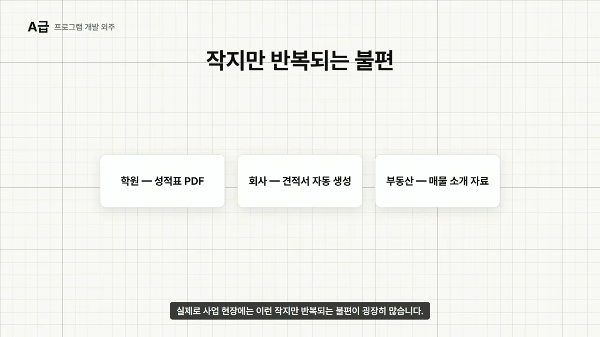
직접 해 보며 느낀 점도 말해요. 고객은 어떤 언어로 개발했는지 궁금해하지 않아요. "그래서 내 일이 진짜 편해지나요?"가 궁금해요. 그래서 "AI 프로그램 개발해 드립니다"보다 "매일 30분씩 걸리던 엑셀 작업을 버튼 한 번으로 끝내 드리겠습니다"가 훨씬 강하다고 해요.
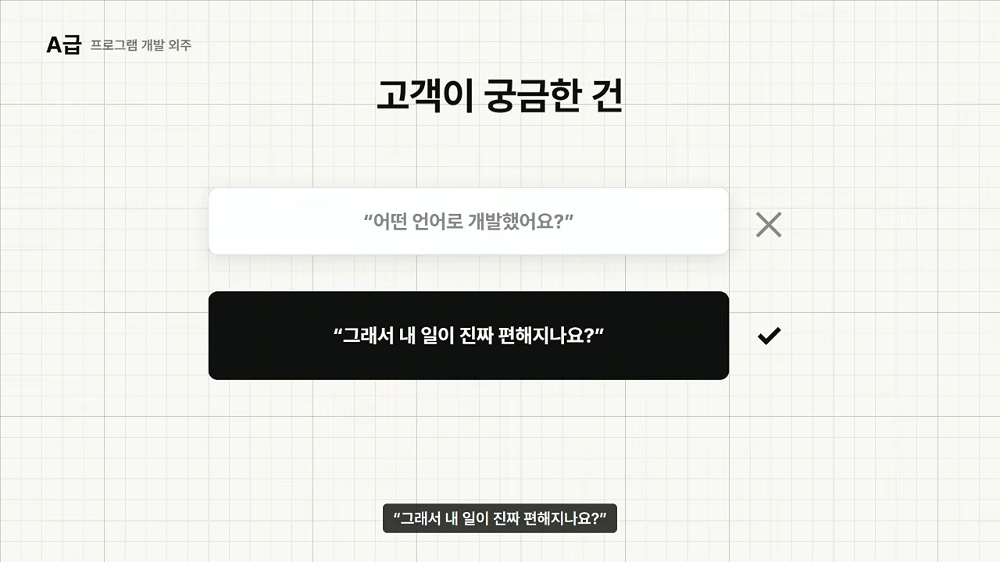
A급인 이유는 오류 때문이에요. 프로그램은 한 번 돌았다고 끝이 아니에요. 슬라이드의 네 줄처럼 고객 컴퓨터에서 안 될 수 있고, 엑셀 양식이 바뀔 수 있고, API(Application Programming Interface)가 바뀔 수 있고, 예상 못 한 데이터로 오류가 날 수 있어요.
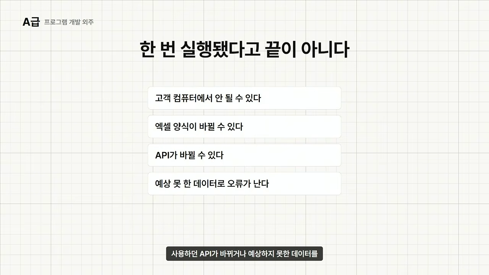
클로드 코드가 코드를 만들어 주는 것과 돈을 받고 프로그램을 납품하는 건 완전히 다른 문제예요. 납품하려면 슬라이드의 세 가지 정도는 알아야 해요. 프로그램이 어떤 구조로 돌아가는지, 어디서 오류가 날 수 있는지, 문제가 생기면 무엇부터 확인할지예요. 그래도 비개발자가 들어올 수 있는 장벽은 분명히 낮아졌다고 해요.
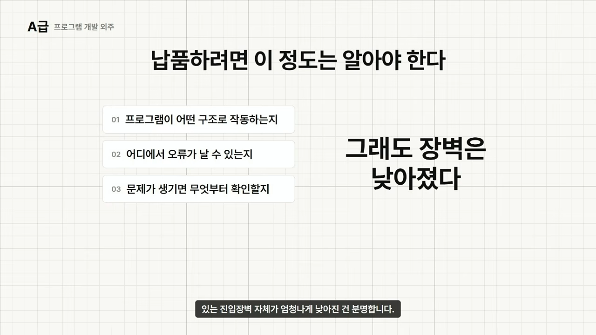
고객의 시간을 실제로 줄여 주는 프로그램이라면 한 건만 받아도 월 50만 원에 꽤 가까워져요. 수익은 확인했지만 유지보수와 책임이 따라서 A급이에요.
SNS 운영대행
사업자는 SNS를 해야 한다는 걸 알지만 대부분 시간이 없어요. 피부과 원장님은 진료, 직원 관리, 병원 운영에 더해 매주 "이번 주 인스타에는 뭘 올리지?"까지 고민해야 해요. 이 귀찮은 일을 대신해 주는 거예요.
방법은 고객마다 클로드 코드 프로젝트를 하나씩 만드는 거예요. 슬라이드에 프로젝트에 쌓을 다섯 가지가 나와요.
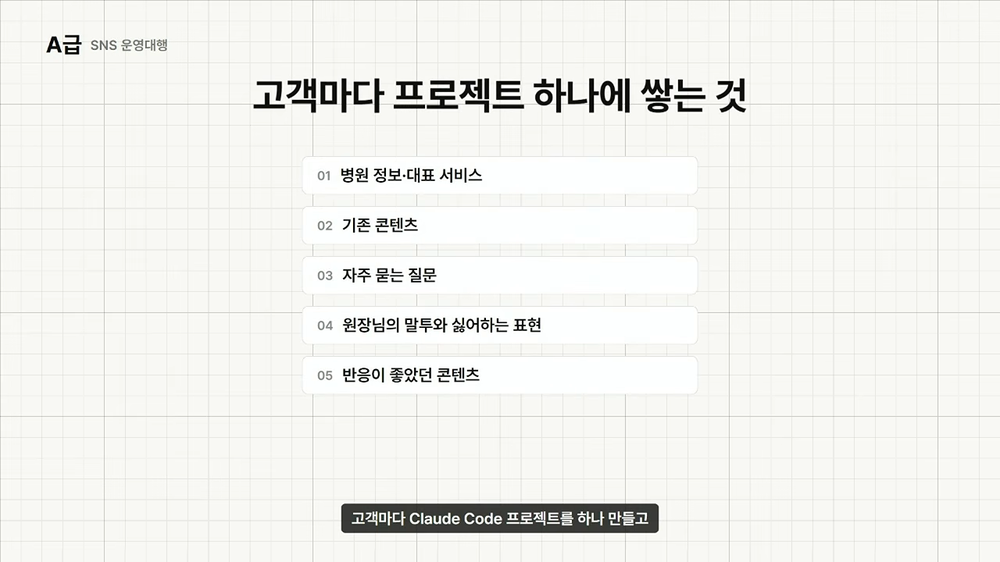
홈페이지와 가장 다른 점은 다음 달에도 SNS를 해야 한다는 거예요. 고객 한 곳과 월 50만 원에 계약하면 영상의 목표를 바로 채워요. 다만 고객 응대가 필요하고 매달 꾸준히 결과물을 내야 해서 S급까지는 아니고 A급이에요.
A+급·S급: 업무 자동화와 유튜브 운영대행
A+급: AI 업무 자동화
앞의 프로그램 외주와 무엇이 다를까요? 슬라이드의 두 칸이 답해요. 왼쪽 흰 칸의 프로그램 외주는 작은 도구 하나를 만들어 줘요. 오른쪽 검은 칸의 업무 자동화는 회사가 일하는 과정 자체를 줄여요.
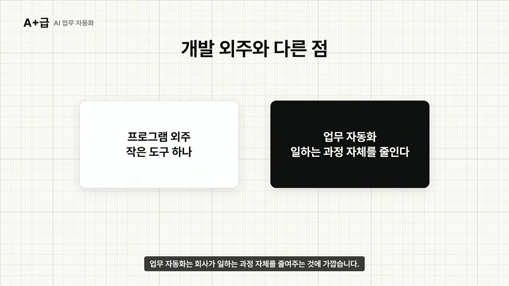
어떤 회사 직원이 매주 경쟁사 조사를 한다고 해 볼게요. 경쟁사 홈페이지에서 새 상품과 가격을 확인하고, SNS까지 보고, 엑셀에 정리하는 데 세 시간이 걸려요. 이때 파는 문장은 슬라이드의 아래 검은 칸이에요.
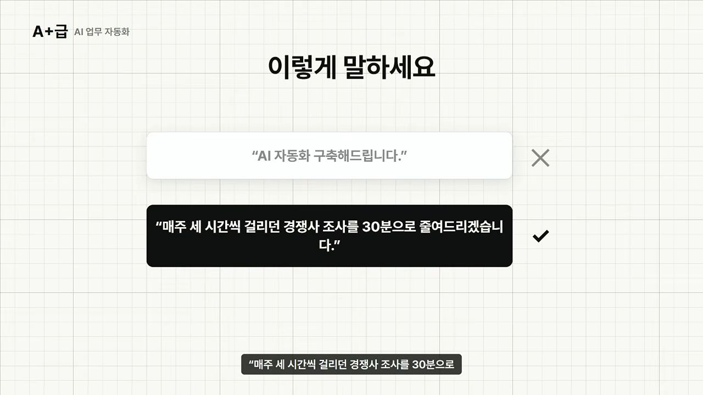
처음부터 100% 자동화를 노리지 않는 것도 중요해요. 그림처럼 AI가 서류 더미의 80%를 맡고, 마지막 20%는 사람이 돋보기를 들고 확인하는 구조가 훨씬 현실적이라고 해요.
한 번 만들고 끝나는 게 아니라 유지보수까지 이어지면 반복 매출이 생겨요. 그래서 A+급이에요. 기준 카드를 보면 초보자가 시작하기 쉬운가에만 X가 있고, 나머지 세 줄에는 모두 체크가 있어요.
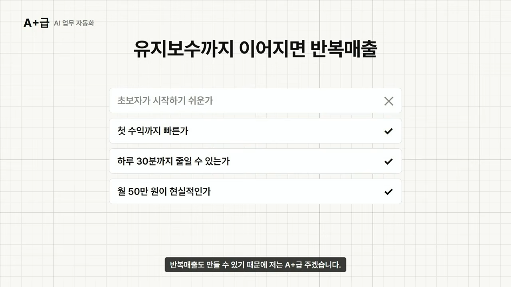
영상은 등급마다 이 기준 카드를 보여 주지는 않아요. 표시가 나온 네 장만 모으면 아래와 같아요.
| 부업 (등급) | 초보자가 시작하기 쉬운가 | 첫 수익까지 빠른가 | 하루 30분까지 줄일 수 있는가 | 월 50만 원이 현실적인가 |
|---|---|---|---|---|
| PPT·제안서 제작 (C) | 체크 | 체크 | X | 표시 없음 |
| 홈페이지 제작 (B) | 체크 | 체크 | X | 표시 없음 |
| AI 프로그램 개발 외주 (A) | X | 체크 | 표시 없음 | 체크 |
| AI 업무 자동화 (A+) | X | 체크 | 체크 | 체크 |
위로 갈수록 '초보자가 쉬운가'는 체크에서 X로 바뀌고, 30분과 50만 원 줄에는 체크가 채워져요. 쉽게 시작할 수 있는 일일수록 오래 버티는 돈이 되기 어렵다는 게 표 전체의 흐름이에요. 홈페이지와 프로그램 외주 카드는 각각 18:35, 23:21에 나와요.
S급: 유튜브 운영대행
단순한 영상 편집 외주가 아니에요. 기획, 벤치마킹, 대본, 촬영 가이드, 제목, 썸네일, 편집까지 하나의 상품으로 묶어요. 슬라이드는 파는 문장이 어떻게 바뀌는지 보여 줘요.
여기서도 고객별로 클로드 코드 프로젝트를 만들어요. 기존 영상, 잘된 영상과 안 된 영상, 경쟁 채널, 댓글, 대표님의 말투, 서비스 정보를 쌓아요. 시간이 지날수록 고객을 더 잘 알게 되고 작업은 빨라져요.
벤치마킹 요령도 하나 알려 줘요. 조회수가 높은 영상만 찾으면 안 돼요. 구독자 100만 명 채널의 조회수 20만보다, 구독자 1만 명 채널의 조회수 30만이 훨씬 중요한 힌트일 수 있어요. 그림 속 막대그래프에서 혼자 튀어나온 막대에 동그라미를 친 것처럼, 채널 평균보다 유독 잘된 아웃라이어 영상을 찾는 거예요.
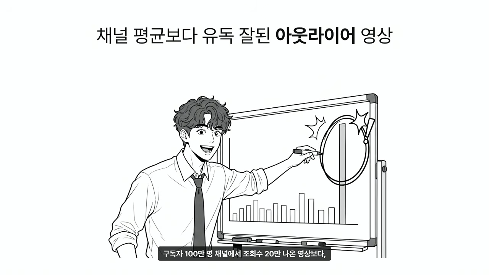
찾은 영상은 세 가지로 분석해요. 사람들이 왜 눌렀는지, 처음 30초에 무엇을 말했는지, 어느 타이밍에 다음 궁금증을 만들었는지예요. 그 구조를 고객 채널에 맞게 다시 적용해요.
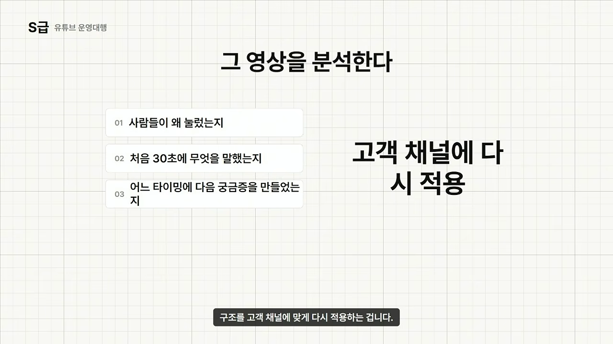
한 고객만 잡아도 월 50만 원을 훌쩍 넘을 수 있어서 S급이에요.
SS급: 콘텐츠·마케팅 대행
마지막 SS급은 AI 콘텐츠·마케팅 대행이에요. 이 순간 화면에 지금까지 채운 순위표가 처음으로 다 나와요. 맨 위 분홍색 SS 칸에 이번 항목이 들어가고, 아래로 S, A+, A(세 개), B(세 개), C, D, F가 차 있어요. 칸마다 그림만 있어서, 각 그림이 무엇인지는 첫 섹션의 순위표 그림에 이름으로 적어 두었어요.
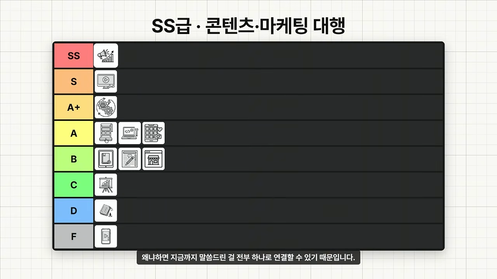
슬라이드는 연결할 수 있는 것 다섯 가지를 늘어놓아요. 홈페이지, 프로그램·자동화, SNS·블로그, 유튜브, 랜딩페이지예요. 모두 앞에서 따로 등급을 받은 일들이에요.
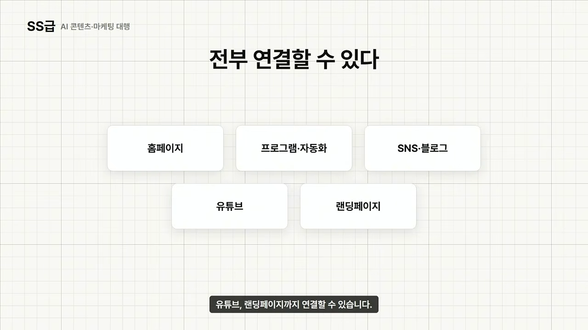
실제로는 이렇게 넓어진다고 해요. 처음엔 SNS 하나만 맡았어요. 일하다 보니 홈페이지 예약 구조의 문제가 보여서 고쳐 줘요. 직원들이 매일 반복하는 일이 보이면 작은 프로그램을 만들어 주고, 유튜브가 필요하면 그것까지 맡아요.
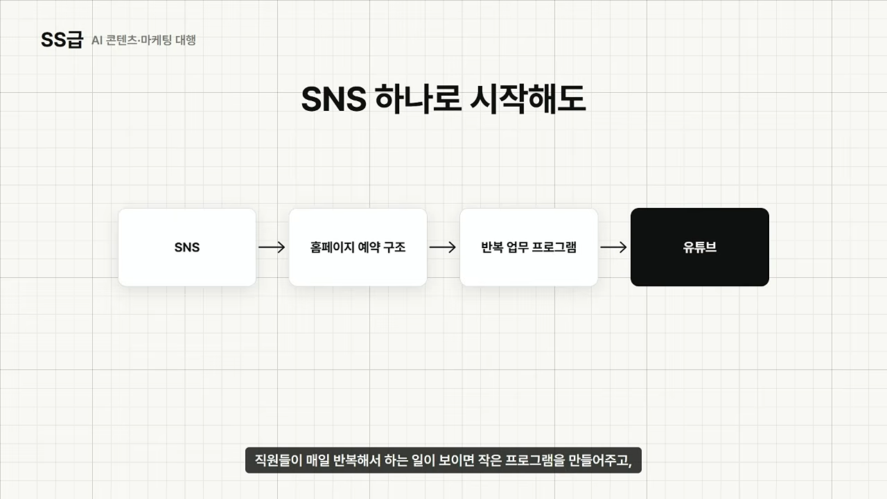
그러면 역할 자체가 바뀌어요. 슬라이드는 "AI를 잘 쓰는 사람"에 X를 치고, "고객 사업의 문제를 AI로 해결하는 사람"에 체크를 붙여요.
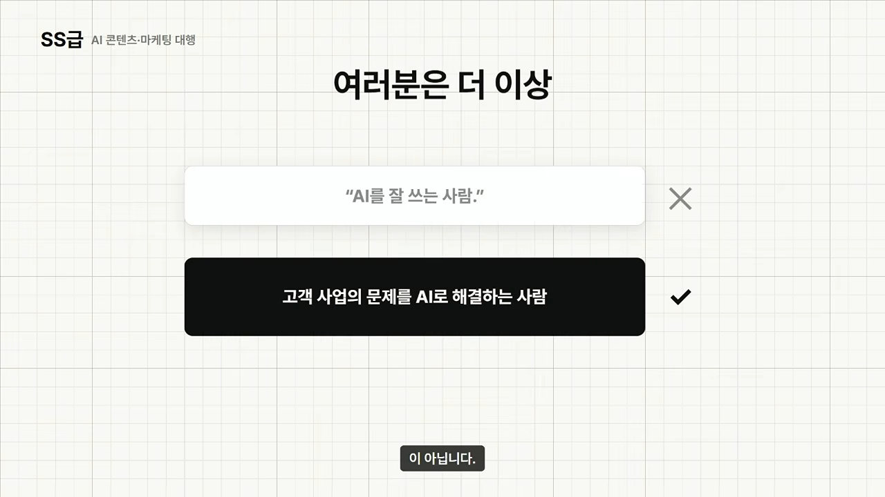
프로젝트 안에는 시간이 지날수록 그 고객에 대한 데이터가 쌓여요. 슬라이드의 네 줄이에요. 어떤 콘텐츠가 잘됐는지, 고객들이 무슨 질문을 하는지, 대표님이 어떤 표현을 싫어하는지, 직원들이 어떤 업무를 반복하는지예요.
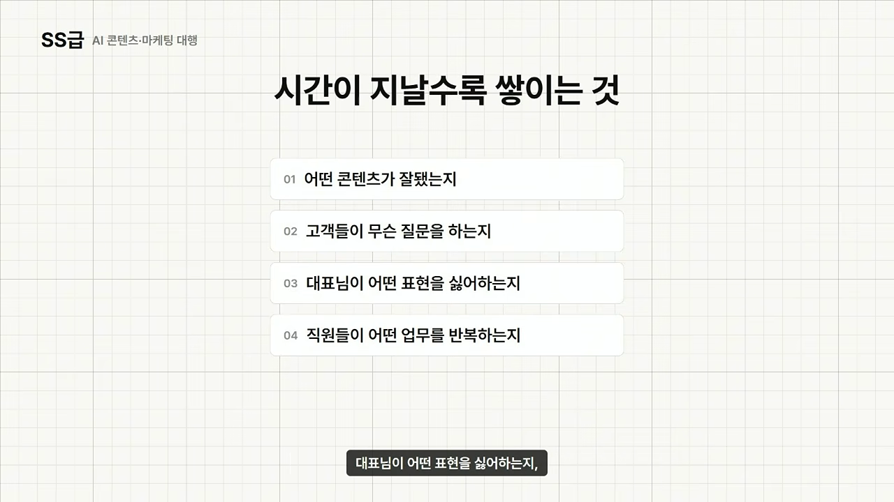
물론 초보자가 오늘 시작해서 내일 바로 할 수 있는 일은 아니에요. 슬라이드의 계단처럼 홈페이지 하나, 프로그램 하나, SNS 고객 하나 같은 작은 경험이 쌓인 뒤에 올라오는 자리예요.
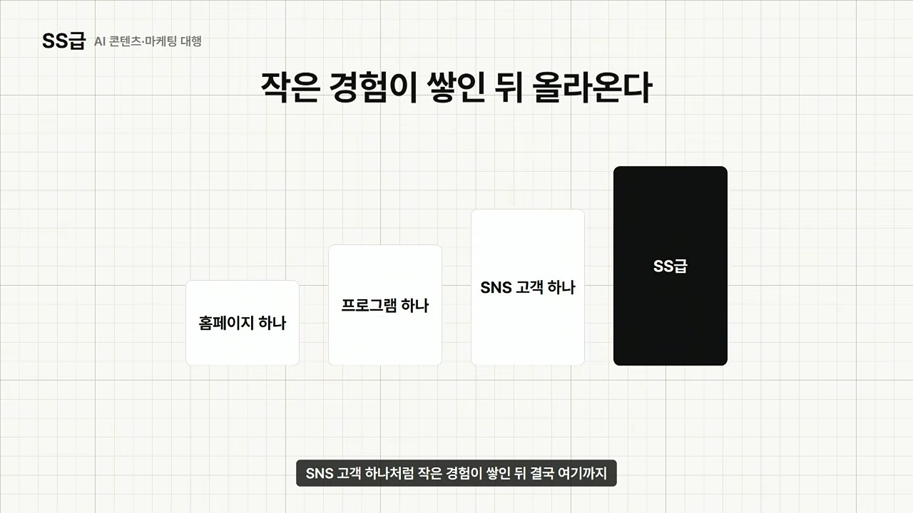
결국 돈을 내는 건 결과물이에요
"결국 AI로 돈 번다는 건 일부 사람들 이야기 아닌가요?" 발표자도 AI가 처음 나왔을 때는 이걸로 누군가에게 돈을 받을 수 있을지 의심했다고 해요. 직접 해 보고 생각이 바뀌었어요. 전자책·강의, 글 작성, 프로그램 외주 모두 마찬가지였어요. 고객은 발표자가 클로드를 잘 써서 돈을 준 게 아니라, 원하는 결과가 나와서 돈을 줬어요.
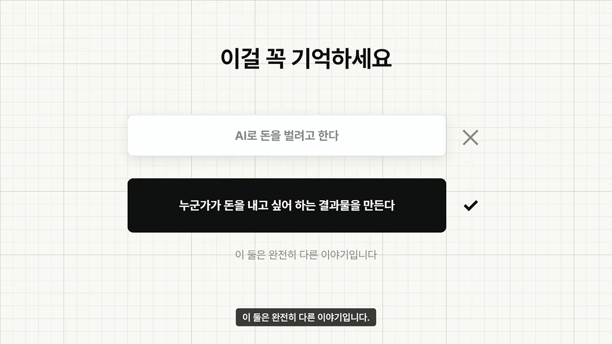
그래서 무엇부터 할까요
경험도 없고 AI도 사업도 처음이라면, 눈에 보이는 결과물 하나부터 만들라고 해요. 슬라이드의 세 칸처럼 홈페이지, 랜딩페이지, 간단한 프로그램 중 하나면 돼요. 전자책을 쓰고 싶다면 그 주제로 경험부터 쌓고, 블로그를 하고 싶다면 글 100개 자동 생성 대신 좋은 글을 직접 만들어 보래요.
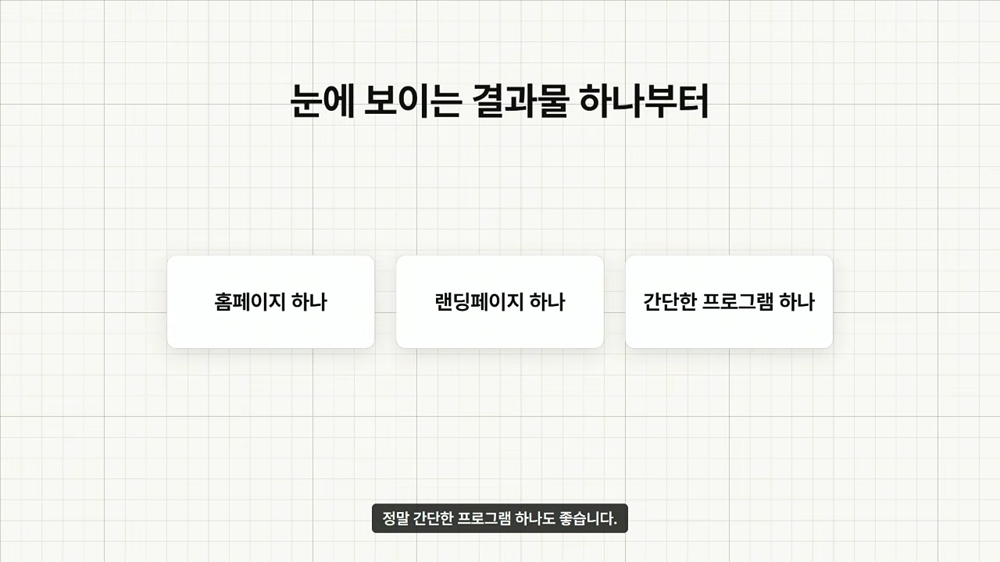
그리고 5만 원이든 10만 원이든 시장에 내놓아 보래요. 중요한 건 금액이 아니라 내가 AI로 만든 결과물에 누군가 처음 돈을 내는 경험이에요. 돈을 받기 전에는 "클로드 코드에 무슨 기능이 있지?"를 보게 돼요. 돈을 받고 나면 슬라이드의 네 질문을 보게 된다고 해요.
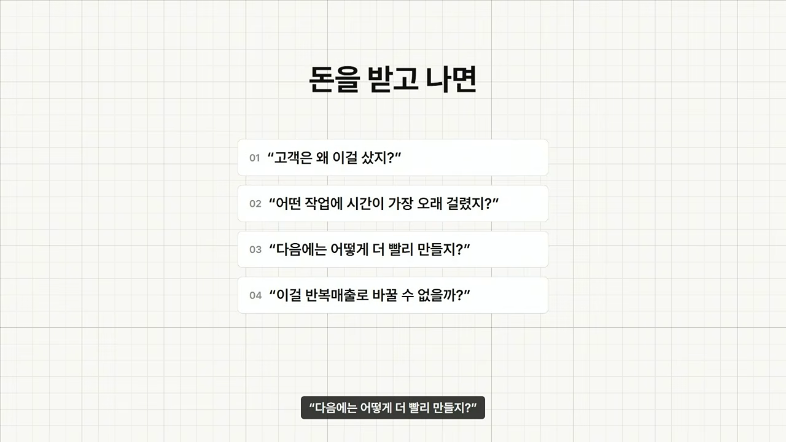
따로 하지 말고 이어지게
발표자는 오늘의 순위보다 더 중요한 게 있다고 해요. 이 일들을 하나씩 따로 하지 않는 거예요. 클로드 코드로 간단한 프로그램을 만들고 그 과정을 유튜브에 올렸다고 해 볼게요. 누군가 "저희 회사 것도 만들어 주실 수 있나요?"라고 하면 첫 고객이 생겨요.
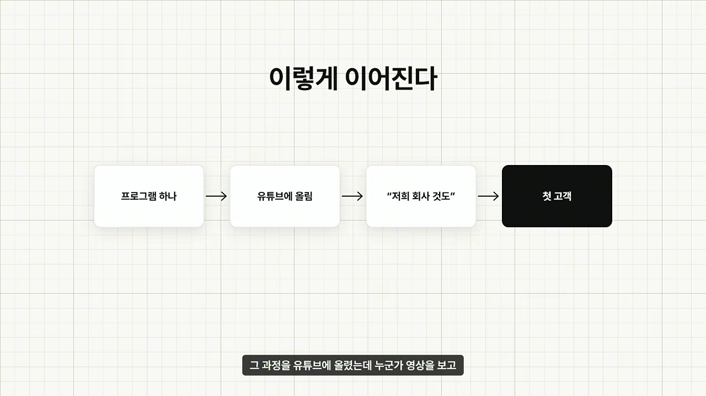
그 고객 일을 하다 보면 또 새 문제가 보여요. 그걸 자동화하고, 그 과정을 다시 콘텐츠로 만들면 사람들이 "이거 어떻게 만드는 거예요?"라고 묻기 시작해요.
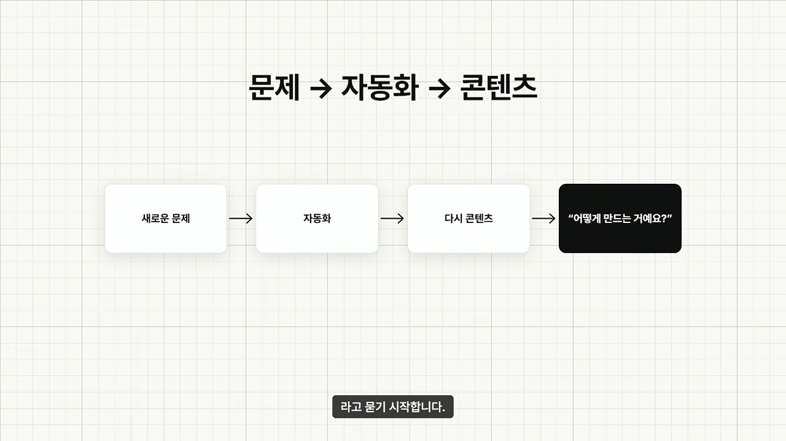
해 본 일을 기록해 두었다면 전자책을 만들고, 더 배우고 싶은 사람에게 강의를 팔 수 있어요. 강의를 본 사람이 "저희 회사에 직접 적용해 줄 수 있나요?"라고 하면 다시 외주 고객이 돼요. 블로그로 정리한 글은 검색과 홈판을 통해 새 사람을 데려와요. 그중 일부는 애드포스트 수익이 되고, 일부는 유튜브로 넘어오고, 일부는 전자책·강의를 사거나 외주를 맡겨요. 이 고리를 한 장으로 그리면 아래와 같아요.
flowchart LR A["콘텐츠
(유튜브·블로그)"] --> B["첫 고객
(외주)"] B --> C["새 문제를
자동화"] C --> D["기록한 경험
→ 전자책·강의"] D --> E["'직접 적용해 주세요'
새 외주 고객"] E --> A
발표자는 이 구조를 슬라이드 제목 한 줄로 정리해요. 콘텐츠가 고객을, 고객 경험이 상품을, 상품이 다시 고객을 데려와요. 칠판에도 영상, 사람들, 책, 돈 아이콘이 화살표로 원을 그리고 있어요.
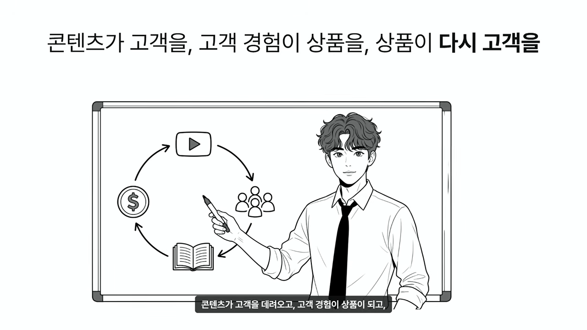
마지막으로 바꿔 볼 질문 하나를 남겨요. 슬라이드의 위 칸 "AI로 뭘 만들 수 있지?"에서 아래 칸 "누가 어떤 문제 때문에 이 결과물에 돈을 낼까?"로요. 발표자는 여기서부터 진짜 AI 수익화가 시작된다고 봐요. 영상을 보고 클로드 코드가 신기하다는 데서 끝내지 말고, 오늘 나온 방법 중 하나만 골라 결과를 하나 만들어 보라는 게 마지막 당부예요.
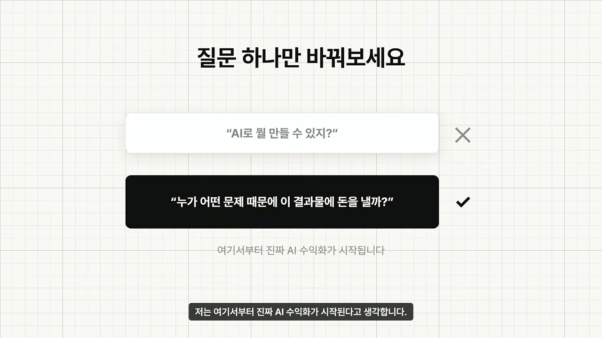